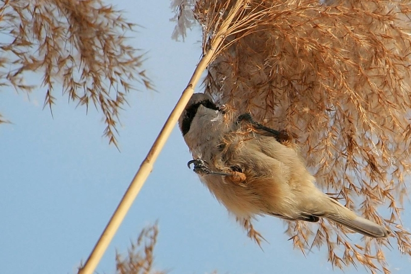
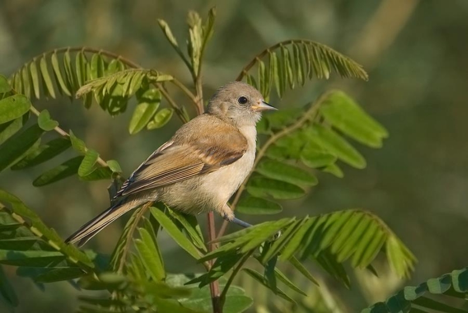
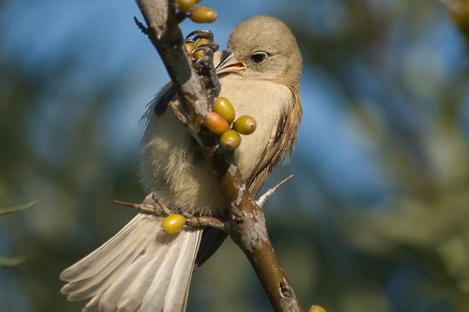

Ремез
- 
- 
- 
Ремез (Remiz pendulinus) будує гніздо схоже на рукавичку у якої великий палець трохи обрізаний - це вхід у гніздечко. Гніздо птах кріпить до тоненької гілки, зазвичай верби, і воно далеко помітне.
На першому фото дорослий птах, а на двох останніх молоденький - тільки но попрощався з батьками.